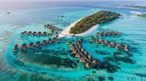

Las maldivas
Las islas Maldivas son una nación tropical conocida por sus playas, lagos azules y extensos arrecifes. La belleza inmaculada de las islas lo impresionará, tanto en tierra firme como bajo del agua.
Sus mares son tan cálidos
¿Por qué visitar las islas maldivas?
La lista de maravillosas experiencias que se pueden vivir en Maldivas puede resultar difusa, casi borrosa. No tiene un principio concreto, y su final se pierde entre las aguas del Océano Índico. Sin embargo, mirándola atentamente, salta a la vista que hay un hilo conductor, algo que da coherencia y sentido a todas esas experiencias, dotándolas de un carácter único y singular. Se trata del agua, el líquido elemento, tan sencillo y tan complejo al mismo tiempo. La geografía, la naturaleza y la esencia pura de Maldivas no se puede entender ni explicar sin hacer antes una reverencia al agua del mar, que todo lo rodea y todo lo llena de vida. Además del buceo, de los arrecifes de coral, de las playas de ensueño, de los barcos, de los cruceros, de los peces de colores, de las olas, del surf, de los amaneceres, de las puestas de sol y de la espuma que besa incesantemente la blanca arena de sus islas, las aguas de Maldivas esconden un regalo más. Un regalo para el viajero más atrevido, que podrá, si lo desea, pasar sus días, y sobre todo sus noches, en una villa construida a dos metros sobre el agua.

Las maldivas, un pais rodeado por el oceano, con agua de diferentes tonos azules, con arena blanca,
peces, palmas, con un paisaje al cual admirar. Es una de las playas que más me encantara conocer,
se me hace siemplemente hermosa, con gran tranquilidad y paz.